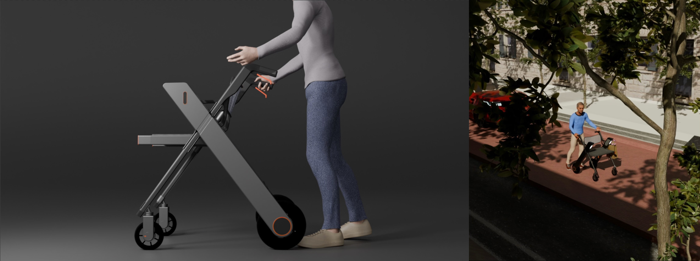
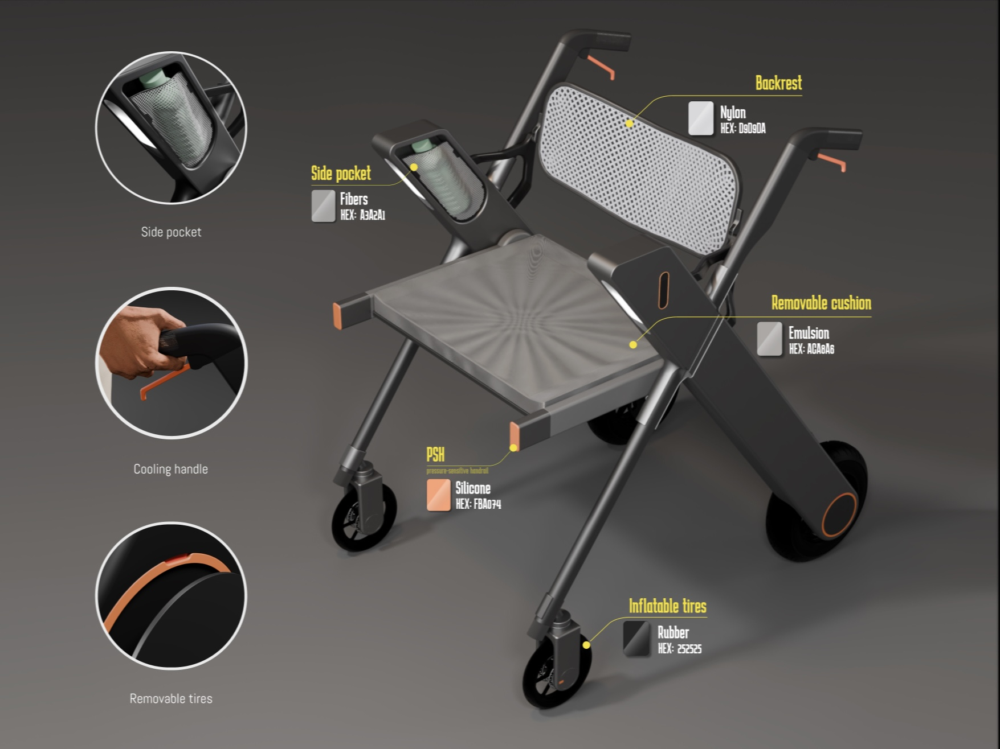
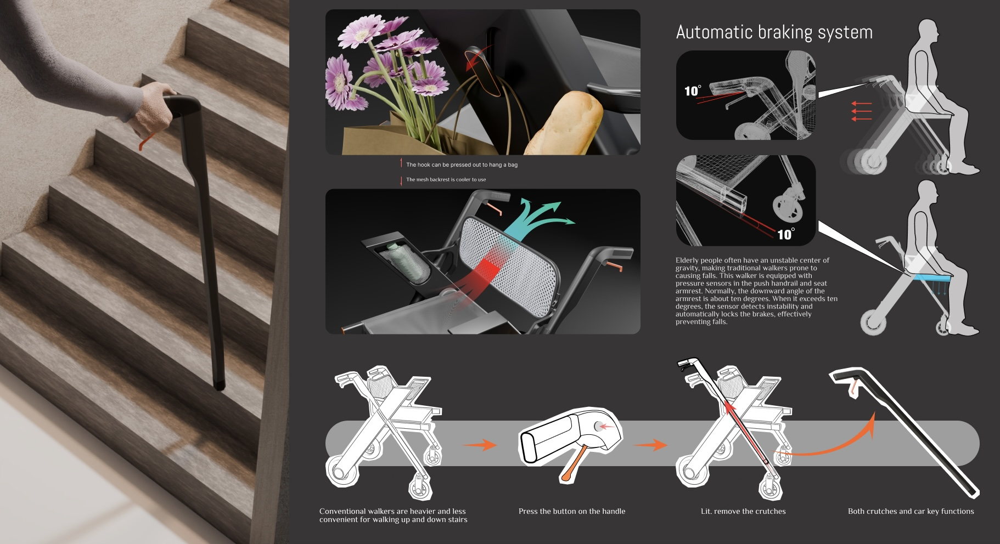
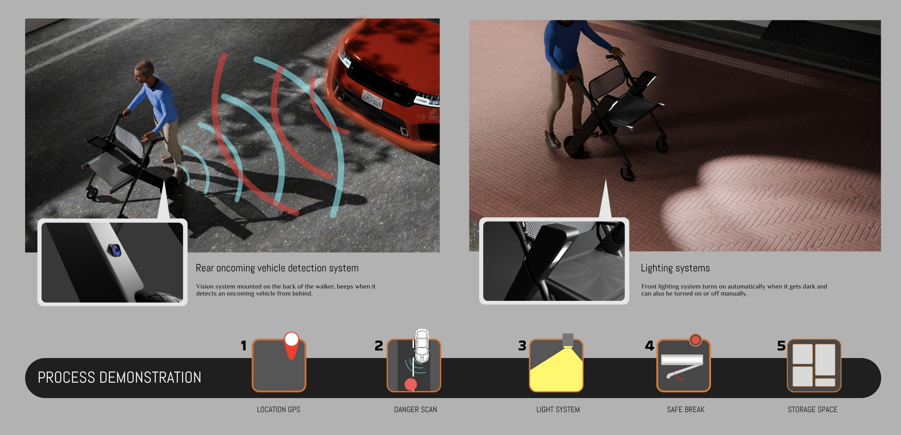
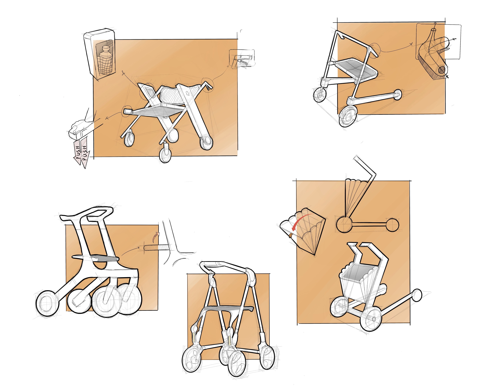
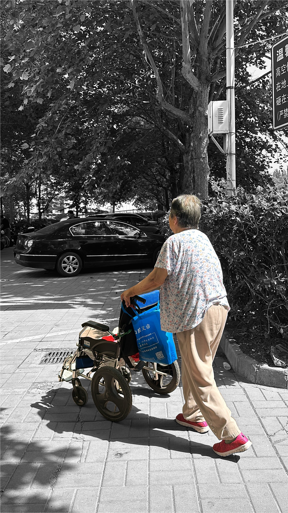
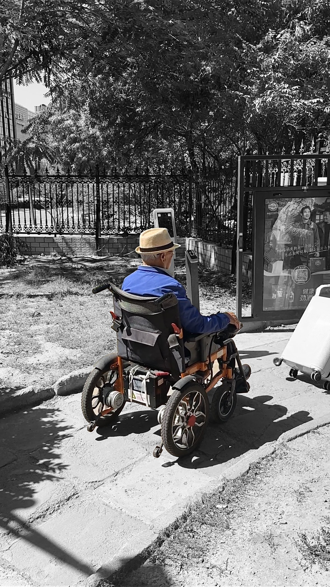
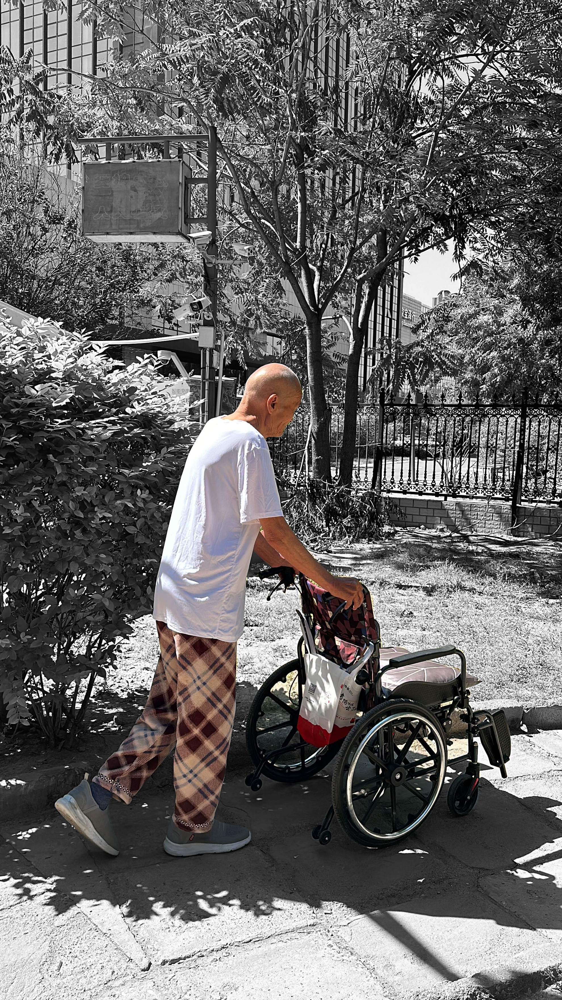
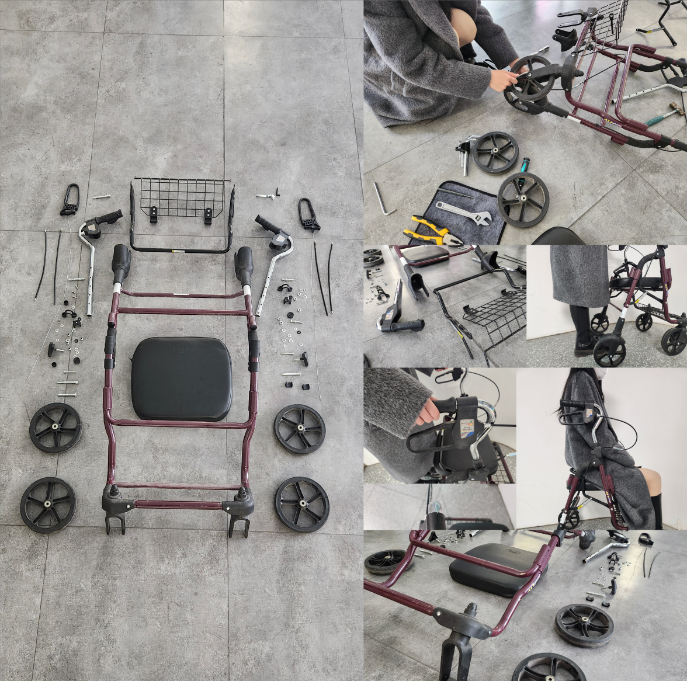

Assistive Walker Design
Many elderly people live in buildings without elevators, where mobility is not only a matter of convenience, but of safety and independence.
This project began with my grandparents. Through observation and interviews with elderly residents and rehabilitation patients, I found that existing walkers cannot adapt to both flat ground and stair environments, and often lack essential safety mechanisms. SafeStep responds to these gaps by rethinking mobility aids as adaptive and context-aware systems.


Automatic braking system based on pressure sensing ensures stability and prevents slipping.
Detachable structure allows transformation into a cane for stair navigation.

Environmental awareness system alerts users to nearby vehicles.
Integrated lighting improves visibility, with storage supporting daily use.

Multiple iterations explored structure, stability, and usability. The final design balances safety and adaptability across different environments.



